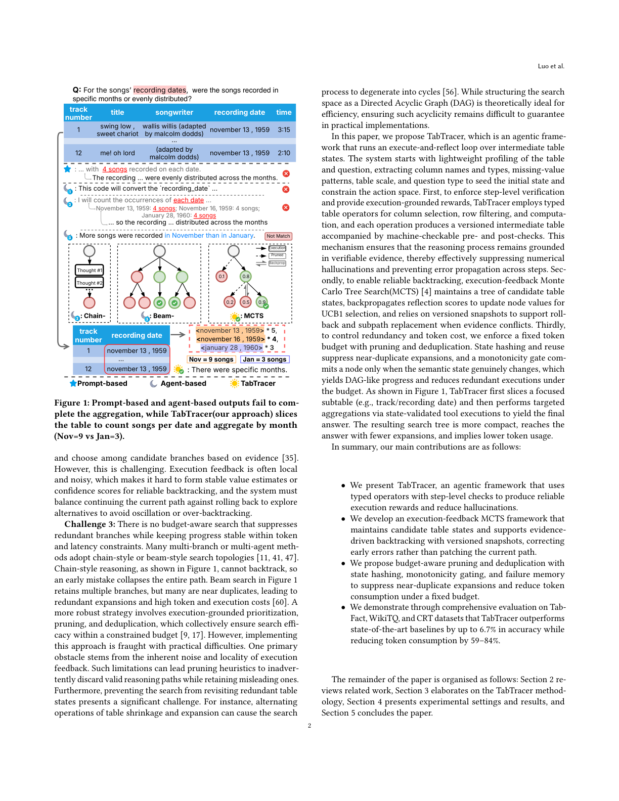
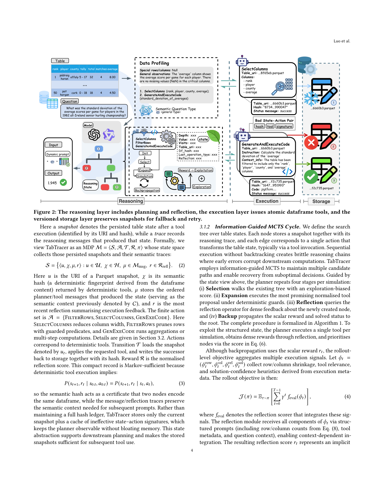
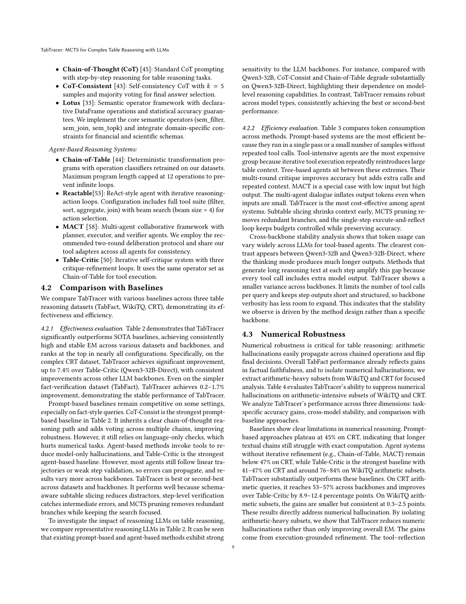
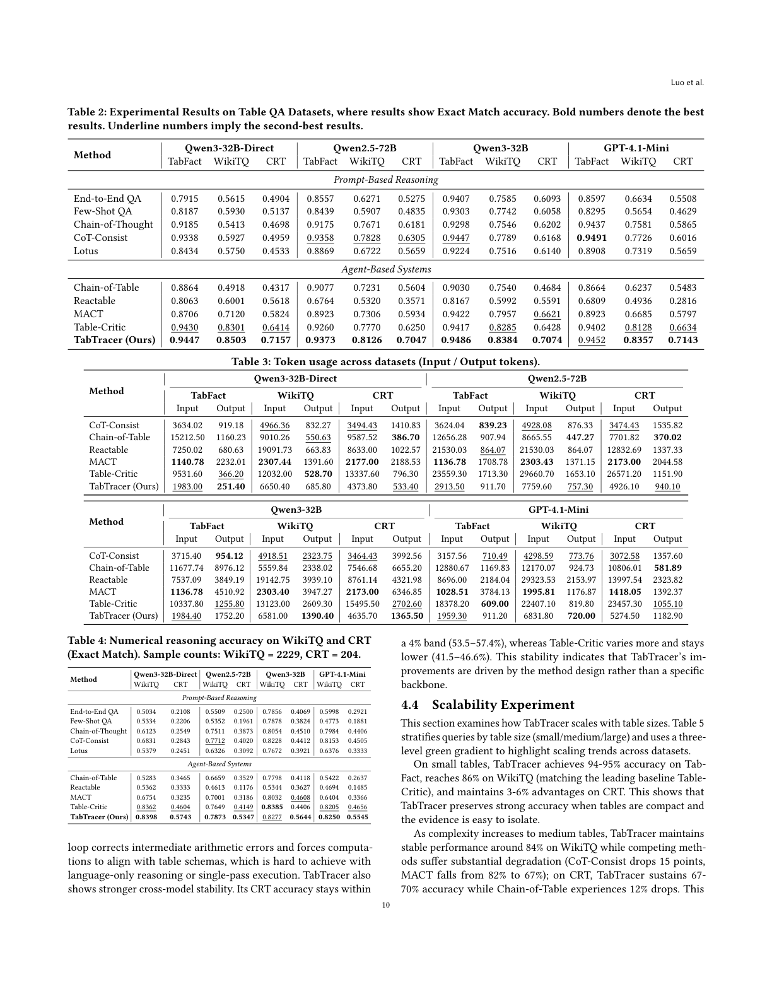
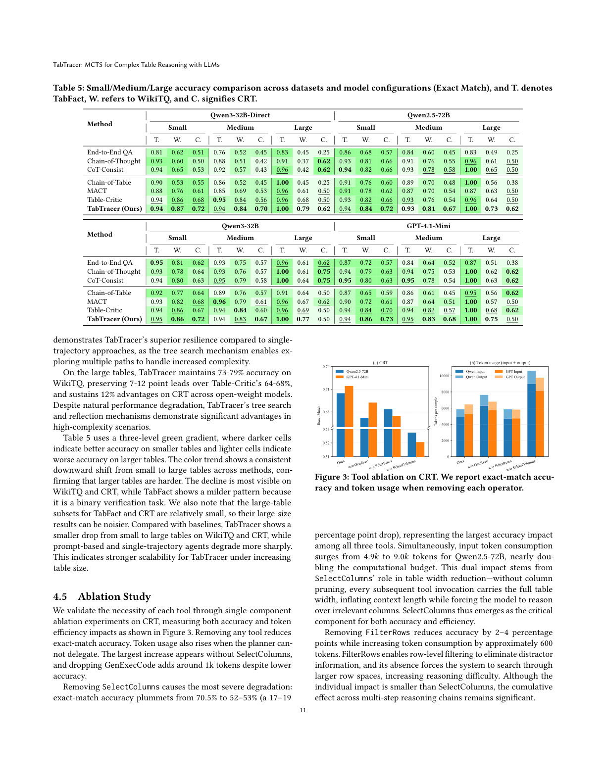
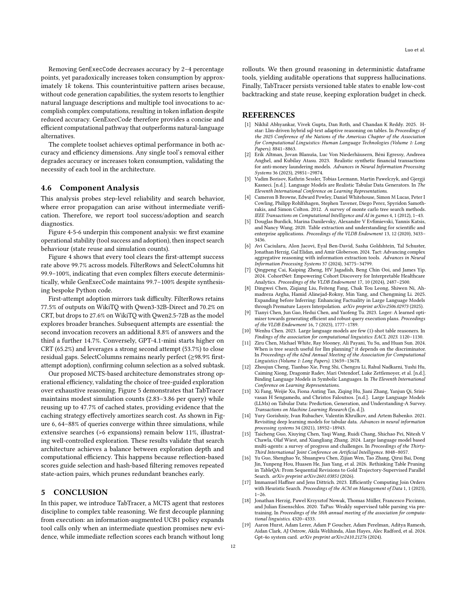

用类型化表格算子 + 执行反馈的 MCTS + 版本化状态存储，实现带步骤级验证、可靠回溯与低冗余的表格推理
大语言模型（LLM）已成为自然语言表格推理的有力工具，现有方法主要分为两类：基于提示（prompt-based）的方法依赖纯语言推理或一次性程序生成，缺乏步骤级验证；基于智能体（agent-based）的方法在闭环中使用工具，但验证往往局部、回溯有限，错误会传播并推高成本，且依赖链式或束式的轨迹，通常存在组合冗余，导致高 token 开销。本文提出 TabTracer，一个智能体框架，它在中间表格状态上协调多步工具调用，并以显式状态追踪实现验证与回滚。首先，它用类型化操作与轻量数值/格式检查强制步骤级验证，提供可靠奖励并抑制幻觉；其次，执行反馈的蒙特卡洛树搜索（MCTS）维护候选表格状态的搜索树，并用反向传播的反思分数引导 UCB1 选择与经版本化快照的回滚；第三，它用预算感知剪枝、去重与带单调性门的哈希降低冗余以削减 token 成本。在 TabFact、WikiTQ、CRT 数据集上的综合评估表明，TabTracer 在准确率上最高超越 SOTA 基线 6.7%，同时降低 token 消耗 59–84%。
结构化表格是跨医疗分析、金融风险管理和科学发现等领域组织数据的普遍媒介。然而其显式结构常施加与自然语言灵活性错配的刚性约束，使将模糊的用户意图映射到精确的表格操作以做组合推理十分困难。表格推理研究如何回答扎根于表格证据的自然语言问题。
早期表格推理方法主要依赖可执行语义解析或程序归纳，虽可解释，却受制于繁重的符号工程与搜索，在弱监督、非规范单元格值、模式/领域偏移下脆弱。面向表格的预训练缓解了工程负担与鲁棒性脆弱，但仍依赖任务特定微调，跨任务与跨领域泛化受限。相比之下，LLM 提供更强的上下文泛化与更广的跨模式迁移能力。
基于 LLM 的表格推理将 LLM 作为核心推理引擎，依赖提示驱动表格理解、推理与回答。早期方法多为基于提示的，在单次或固定多阶段提示中前馈传递，步骤顺序预定义，下游决策不随中间执行改变，没有外部执行信号确认中间假设是否正确，一旦误读模式或保留错误子集，后续推理便建立在该错误之上。图 1 中，CoT（星标）展示纯语言判断如何引入计数或统计错误并沿链传播。这些局限催生了基于智能体的方法，通过让 LLM 选择动作、调用工具并基于执行反馈更新决策来闭合循环；但反馈常是局部的，系统性回溯有限，多分支推理推高 token 成本。图 1 中，ReAcTable（月-1）未能触发工具使用便停滞；Chain-of-Table（月-2）累积过程错误而不及时回滚；Table-Critic（月-3）接近但表达式不匹配且因多分支对话产生巨大 token 开销。总体而言，现有方法在准确性与效率上仍面临清晰挑战。

挑战 1：现有方法缺乏步骤级验证与可靠奖励，中间错误常未被检查而传播。当表格被线性化给 LLM 时，行列对齐、模式/类型/单位约束等二维结构线索被削弱，使语义错误与表格幻觉更难检测；LLM 对计数与聚合任务中的数值精度也不敏感，导致数值幻觉跨步复合。我们需要机器可检查的步骤验证与反映意图的执行扎根奖励，轻量数值与格式检查使验证可行并保持推理扎根于证据。其难点在于表格算子与数据格式差异巨大，难以定义统一的前/后条件，且在许多工具接口自由形式或弱解析时难以构建可靠奖励。
挑战 2：缺乏有效回溯使早期错误难以纠正。多数方法走线性或浅分支过程，一旦早期误读问题或表格，后续步骤只能局部修补当前路径，极少回滚关键决策或探索替代方案。更好的做法是一个可回溯的推理机制，能在执行证据与当前假设冲突时返回关键决策点，重置或替换子路径。然而这很困难：执行反馈常局部且带噪声，难以形成稳定的价值估计或置信分数以可靠回溯，系统还需在继续当前路径与回滚探索替代之间平衡，避免震荡或过度回溯。
挑战 3：没有预算感知的搜索能在 token 与延迟约束内抑制冗余分支并保持进度稳定。许多多分支或多智能体方法采用链式或束式搜索拓扑：链式无法回溯，早期错误使整条路径崩溃；束搜索保留多分支但许多近乎重复，导致冗余扩展与高 token/执行成本。更鲁棒的策略是执行扎根的优先级、剪枝与去重，但实现困难——执行反馈的噪声与局部性可能使剪枝启发式误弃有效路径、保留误导路径；防止搜索重访冗余表格状态也极具挑战（如表格收缩与扩张交替可使搜索退化为循环）。
本文提出 TabTracer，一个在中间表格状态上运行「执行-反思」循环的智能体框架。系统先对表格与问题做轻量画像（抽取列名与类型、缺失值模式、表格规模、问题类型），以播种初始状态并约束动作空间。第一，为强制步骤级验证并提供执行扎根奖励，TabTracer 采用类型化表格算子（列选择、行过滤、计算），每个操作产生带版本化的中间表，并配有机器可检查的前/后条件，使推理扎根于可验证证据，有效抑制数值幻觉并防止错误跨步传播。第二，为实现可靠回溯，执行反馈的 MCTS 维护候选表格状态的树，反向传播反思分数以更新节点价值供 UCB1 选择，并依赖版本化快照在证据冲突时支持回滚与子路径替换。第三，为控制冗余与 token 成本，我们施加固定 token 预算配合剪枝与去重；状态哈希与复用抑制近乎重复的扩展，单调性门仅当语义状态真正改变时才提交节点，从而得到类 DAG 的推进并在预算下减少冗余执行。如图 1，TabTracer 先切出聚焦子表，再通过状态验证的工具执行做定向聚合得出最终答案，搜索树更紧凑、用更少扩展到达答案、token 用量更低。
主要贡献：(1) 提出 TabTracer，用带步骤级检查的类型化算子产生可靠执行奖励并减少幻觉；(2) 开发执行反馈 MCTS 框架，维护候选表格状态并支持带版本化快照的证据驱动回溯；(3) 提出带状态哈希、单调性门与失败记忆的预算感知剪枝与去重，抑制近乎重复的扩展并降低 token 消耗；(4) 在 TabFact、WikiTQ、CRT 上证明 TabTracer 准确率最高超越 SOTA 6.7%，同时 token 消耗降低 59–84%。
此类方法将表格与问题组织为单次或固定两阶段提示，LLM 不基于外部执行反馈做多步决策，推理依赖纯语言推理或一次性程序生成，可分为语言-only 自推理与固定流水线程序。
语言-only 自推理：Tab-CoT 用结构化 Markdown 推理表对齐行列；两阶段自增强提示在推理前抽取结构线索提升鲁棒性；简单表格序列化以极少上下文示例取得更好表现；FLEXTAF 通过多格式选择与投票改善对齐。这类工作主要改进提示结构、表示与稳定性，仍缺乏工具级验证与回滚。
固定流水线程序：这类方法一次性生成程序或抽取指令，执行结果不反馈到后续决策，形成单向流水线。Binder 将 LLM API 嵌入混合程序但执行流固定；TabSQLify 走 SQL→子表→答案工作流；H-STAR 用固定抽取与路由推理的两阶段；LOTUS 引入带查询优化的语义算子；TabTrim 用黄金轨迹监督剪枝配合并行子表配置。这些方法严重依赖抽取或程序生成的语义正确性，一旦子表或程序错误便难以恢复。相比之下，TabTracer 用信息增益 MCTS 替换单向流水线，并用带哈希去重的版本化表格状态实现回溯与复用。
此类方法将 LLM 视为在闭环中做多步决策的控制器，用工具、检索或执行反馈更新后续动作，可分为工具使用智能体与多智能体协作。
工具使用智能体：Chain-of-Table 通过迭代操作演化表格；ReAcTable 将 ReAct 引入表格 QA 并用多轨迹投票的执行反馈；AixelAsk 将推理建模为带分解与检索的 DAG 优化；TableMind 用 SFT 与 RAPO 训练工具使用策略。尽管有反馈，验证常停留于语法或局部执行，语义检查或回溯有限。TabTracer 增加步骤级机器可检查验证与反思奖励，并将工具执行与 MCTS 式回溯耦合以纠正早期错误。
多智能体协作：AutoTQA 用多角色 FSM 调度做多表 QA；MACT 引入在线规划；Table-Critic 依赖带自演化模板树的多角色批判；TALON 采用长表的「探索-检索-回答」流水线。然而验证仍多为语言层面，多智能体对话推高 token 成本与延迟，系统常在当前路径内修补而非系统性回溯。我们的方法通过预算感知、带状态复用的搜索避免多智能体开销，并用已知坏状态-动作对的黑名单抑制冗余分支，以更低成本维持稳定探索。
为应对表格推理的三大挑战（弱步骤级验证与不可靠奖励导致幻觉、缺乏有效回溯、冗余搜索成本），TabTracer 是一个将基于 LLM 的规划与环境在语义表格状态上的交互相耦合的智能体框架，并显式管理这些状态以便验证与恢复。如图 2，它先用推理层运行预算感知 MCTS，管理分支、启用回溯并抑制近乎重复的路径；所选动作随后由执行层通过带前/后条件检查的类型化 dataframe 工具执行；最后，存储层保留版本化表格状态以支持回滚与复用。形式化地，我们将分层智能体记为：
其中 $L_{\text{reason}}$ 承载规划器，$L_{\text{exec}}$ 暴露确定性 dataframe 工具（列选择、行过滤、基于代码的计算），$L_{\text{store}}$ 提供哈希索引的回滚缓存，存储版本化表格快照供复用与回滚。后续小节先详述各层，再分析其联合保证与运行时优化。

该层在运行预算化 MCTS 控制器与反思循环前先做表格感知的数据画像。数据画像加载完整表格到 dataframe，记录行/列数，检测特殊行/列或缺失值，并渲染 Markdown 预览作为规划器的上下文记忆；同时重述并分类问题（数值、比较、查找等），由画像器提出初始工具骨架。该元数据物化为根快照——捕获表格 URI、语义哈希、规划器/工具轨迹与最新反思——足以支撑下游规划。
图 2 左块展示数据画像：我们将完整表格载入 dataframe，记录行/列计数，检测特殊行/列或缺失值（如 average 列是否完整），并渲染成为规划器上下文记忆的 Markdown 预览。同时，问题被重述与分类（数值、比较、查找等），画像器提出初始工具骨架。该元数据物化为根快照——捕获表格 URI、语义哈希、规划器/工具轨迹与最新反思——足以支撑下游规划。
我们在表格状态上定义搜索树。每个节点存一份快照及其推理轨迹，每条边对应一个经工具调用转换表格状态的动作。无回溯的顺序执行产生脆弱推理链，早期错误会污染下游计算。TabTracer 用信息引导 MCTS 维护多条候选路径并支持从次优决策中恢复。规划器每轮模拟重复四阶段：(i) 选择——用探索偏置分数走现有树；(ii) 扩展——在确定性守卫下执行最有希望的归一化工具提议；(iii) 反思——查询反思算子对新节点给出稠密反馈；(iv) 回溯——将标量奖励与已解状态反向传播到根。完整过程形式化于算法 1。为利用结构化状态，规划器每轮模拟执行单一工具，通过反思获得稠密奖励，并用式 (6) 的分数优先节点。
尽管反向传播用标量奖励 $r_t$，rollout 级目标聚合多个执行信号。令 $\phi_t=(\phi^{\text{row}}_t,\phi^{\text{col}}_t,\phi^{\text{rel}}_t,\phi^{\text{sol}}_t)$ 收集行/列收缩、工具相关性与解置信度启发式，rollout 目标为：
其中 $f_{\text{eval}}$ 为整合这些信号的反思打分器。反思模块通过结构化提示接收 $\phi_t$ 各分量（含式 (8) 的行/列计数、工具元数据与问题上下文），实现上下文相关的整合；所得反思分数 $r_t$ 表示隐式评估 $r_t\approx f_{\text{eval}}(\phi_t)$，LLM 依问题类型与数据特征自适应加权特征。为回退排序，我们还维护重复或退化状态的惩罚指示：
其中 $\mathbf{1}_{\text{dup}}$ 检测哈希重复状态（式 (7) 中 $\delta=0$），$\mathbf{1}_{\text{empty}}$ 标记退化表。这些惩罚惰性求值，供后续回退打分器使用。
选择阶段。图 2 中，选择在当前候选中取 UCB1 分数最高的叶子。对该查询，该叶子通常保留 average 列，使后续动作能计算标准差。选择过程用轻量 UCB1 分数，在保留 UCB1 简洁性的同时融入执行感知守卫：
其中 $c$ 是父节点 $n$ 的子节点，$C$ 为探索常数，$\epsilon$ 避免除零。零访问子节点获近乎无穷优先级，使搜索在精炼高价值分支前快速触及未探索分支。选择从根迭代下降，取合格节点中 UCB1 最高者，在首个未访问节点停止。此后 TabTracer 施加执行感知守卫——基于哈希的重复检测、空表回滚与单调性门——确保前沿仅留真正有信息的状态。
扩展阶段。对每个被选叶子（代表当前表格快照），扩展过程（算法 2）用 LLM 提议有序的候选工具动作列表，施加确定性有效性过滤（列存在、参数有效、缓存的坏状态-动作签名、重复/无效动作、工具守卫），执行第一个有效动作以创建子节点。我们定义语义状态改变指示：
其中 $\chi$ 为内容哈希。收缩代理随后追踪数据减少：
其中 $\phi_{\text{rows}}(D,D')=\text{rows}(D')/\text{rows}(D)$、$\phi_{\text{cols}}(D,D')=\text{cols}(D')/\text{cols}(D)$ 为相对维度变化。实现用 $\delta$ 作硬单调性门：仅当 $\delta=1$ 时才创建子节点，确保每次扩展都改变表格状态。若动作使表格不变（$\delta=0$，故 $\rho=0$），立即丢弃。我们仍施加固定深度与模拟预算作硬保障，但收缩信号提供了按保留证据多少排序扩展的直接、执行时度量。
候选选择遵循带显式有效性门的有序提议：
其中 LLM 提议顺序提供隐式优先级，确定性过滤强制可执行性。
反思阶段。反思评估器消费 $(s,a,s')$ 加行/列差异与预览，仅返回归一化标量分数 $r\in[0,1]$、布尔已解标志与自由形式批判。该稠密奖励被立即反向传播。当树需要给出最终答案时，我们惰性构建特征向量：
累积的节点价值 $V_n$（经反向传播，式 (14)）即该整合分数。回退选择用：
回溯阶段。回溯将反思分数与已解标志向上传播，更新节点价值与访问计数以服务 UCB1 选择并支持提前终止。反向传播用增量均值更新价值：
其中 $R_{\text{child}}$ 为扩展子节点返回的归一化反思奖励，$N_n$ 为节点 $n$ 更新后的访问计数。每个节点还存轻量执行元数据（最后工具类型、输出行、哈希）供回退打分器排序叶子时使用。
推理循环在根被标记已解（某子节点找到证书）或模拟预算耗尽时终止。两种情况下，式 (12) 提供惰性求值特征向量，按累积反思分数、收缩度与退化惩罚排序前沿节点，同时抑制已黑名单的状态-动作签名。重活（存哈希、元数据、惩罚权重）由存储层处理；推理层仅查询该缓存获得 $(\boldsymbol{z}_t, s^{\text{fb}}_t)$ 并选最高排名节点抽取答案。搜索深度受显式深度上限与收缩率约束：
可采纳轨迹是那些通过步骤级工具守卫的：
无效动作被立即过滤，哈希门防止重访相同表格状态。
该层对应图 2 中块：规划器选的每个动作都扎根于三个类型化 dataframe 算子之一，其输出是机器可检查的元组 $(\text{table\_uri},\text{hash},\text{rows},\text{cols},\text{preview},\text{status})$。目标是将抽象指令转为确定性表格变换，同时回流驱动收缩信号与反思提示的元数据。
执行层将推理扎根于具体表格变换而非纯语言猜测。一个简洁动机是：确定性变换不增加关于答案的信息，
且同时保留两个快照可保全信息：
其中 $A$ 为答案、$Q$ 为问题、$D$ 为当前表、$D'$ 为变换后表。图 2 的三个工具实现这些映射：SelectColumns 将模式投影到最小列集；FilterRows 评估带守卫的谓词；GenExeCode 运行沙箱化 Python 做定制统计。每个工具发出上述元组，使规划器看到更新后的快照与预览。
LLM 提议先经工具调用归一化器强制 JSON 载荷并补全缺失 ID，随后每个确定性工具在执行前施加模式感知守卫（检查列存在、谓词有效、类型/格式强制、沙箱约束），并发出显式状态码与诊断。丰富执行元数据（行/列计数、哈希、预览）随每次调用返回，供推理层计算收缩、检测退化并组合反思提示。图 2 的「坏状态-动作对」面板可视化验证失败时签名如何被记录。算法 4 端到端总结这些契约。
因每轮模拟恰好执行一次确定性工具调用后接反思算子，每轮迭代成本由执行层操作主导。在标准 UCB 假设（有界奖励与持续探索）与一致反思分数下，TabTracer 的选择规则满足：
经典 UCB1 置信半径直接适用。即时反思产生基于观测转移的无偏价值估计（因式 (3)），单步扩展避免模拟偏差。这表明 TabTracer 的单步执行-反思循环在保持运行时可预测的同时逼近高质量策略。
该层对应图 2 最右块：执行层返回的每元组被物化为带版本化的快照与哈希索引缓存项，并对无效状态-动作对记录惩罚。其角色有二——通过缓存快照复用过去证据，并通过去重与黑名单抑制冗余或低质量扩展。
每个快照物化为元组 $v_i=(\text{uri}_i,\text{hash}_i,\mu_i)$，其中 $\mu_i$ 追踪行/列计数与执行元数据。TabTracer 维护哈希索引缓存：每个语义哈希指向其 Parquet URI、伴随元数据与两类基于签名的过滤器。其一，动作去重集抑制来自同状态的语义等价工具调用；其二，黑名单存储曾产生低反思分数或无效输出的状态-动作签名，这些对在后续 rollout 中被惩罚并跳过。设 $H_t$ 为至时刻 $t$ 的哈希索引缓存，每当执行 $(h,a)$ 且反思分数低于容差，该对被记录惩罚权重 $\pi(h,a)$：
重访同一 $h$ 时先查询 $H_t$：累积惩罚的签名被跳过，未探索签名可复用存储快照。除剪枝外，缓存还暴露先前已解的 URI 供回退例程使用。
仅派发良类型动作（指示 $\mathbf{1}_{\text{typed}}(a,D)=1$），任何失败签名 $(h_t,a)$ 被追加到黑名单 $K$，使后续尝试在不重跑工具下被丢弃。存储层结合惰性加载与基于哈希的缓存——若两节点共享同一语义哈希，仅保留指针。增量统计（如式 (14) 的均值）避免存完整奖励历史。低效用分支在其 UCB1 分数低于下式时被剪枝：
其中 $\kappa$ 经校准以将树保持在固定内存预算内。
本节先介绍数据集、基线与评估指标，再报告相对强基线的整体有效性与成本效率，并进一步分析算术密集型负载上的数值鲁棒性、工具级消融，以及随表格规模与搜索深度的可扩展性。

数据集。在 TabFact、WikiTQ、CRT 的官方测试集上评估。TabFact 含 2024 个表-断言对（二值标签）；WikiTQ 覆盖 4344 个开放域问题（答案可为字符串、数字或日期）；CRT 含 728 个开放任务（事实与解析查询），其中 204 个（28.0%）需显式数值计算。
系统配置。实验在 Linux 6.6.80 主机（16 核 Intel Xeon Gold 6133、31 GiB RAM）上进行。Qwen2.5-72B-Instruct 经 vLLM 在 8 张 NVIDIA V100（CUDA 12.1）上服务；Qwen3-32B 用 8 张 L40；Qwen3-32B-Direct 关闭供应商思考模式；GPT-4.1-mini 经 OpenAI API 访问。实现依赖 PyTorch 2.1、langgraph 0.5.0、langchain 0.3.26、pandas 2.3.0。TabTracer 每节点生成 3 个候选扩展，搜索深度上限 5，模拟预算 15，LangGraph 递归上限 50，默认启用基于哈希的状态缓存与回滚，候选生成与反思的基础温度设为 0.1。
指标。报告 Exact Match (EM)、token 输入/输出计数、工具成功率 (SR)、工具采纳率 (AR，即保留分支上的工具调用占比)、状态复用率与平均模拟次数。遵循 Table-Critic 协议在比较前归一化标点、格式与时间戳；WikiTQ 与 CRT 归一化后比答案，TabFact 直接用 EM。
基线。选取九种基线：基于提示的（End-to-End QA、Few-Shot QA、CoT、CoT-Consist、Lotus）与基于智能体的（Chain-of-Table、ReAcTable、MACT、Table-Critic），所有基线在相同实验条件下评估，超参在验证集上经系统网格搜索调优。
4.2.1 有效性评估。表 2 显示 TabTracer 显著超越 SOTA 基线，在各数据集与骨干上取得持续高且稳定的 EM，在几乎所有配置中居首。尤其在复杂 CRT 数据集上，相对 Table-Critic（Qwen3-32B-Direct）提升达 7.4%，在其他 LLM 骨干上也一致提升；即便在较简单的 TabFact 上也提升 0.2–1.7%。基于提示的基线在某些事实式查询上仍有竞争力（CoT-Consist 是最强提示基线），但依赖纯语言检查，伤害数值任务；基于智能体的方法调用工具以减少模型-only 幻觉，Table-Critic 是最强智能体基线，但多数智能体仍走线性轨迹或弱步骤验证，错误会传播，跨骨干结果波动更大。TabTracer 在各数据集与骨干上均居最优或次优，归因于模式感知子表切片减少干扰、步骤级验证捕获中间错误、MCTS 剪枝移除冗余分支同时保持聚焦。

4.2.2 效率评估。表 3 比较 token 消耗：基于提示的系统最高效（单遍或少量样本，无重复工具调用）；工具密集型智能体最贵（迭代工具执行反复引入大表格上下文）；树式智能体居中。TabTracer 是智能体系统中最具成本效益的——子表切片尽早收缩上下文、MCTS 剪枝移除冗余分支、单步执行-反思循环保持预算可控同时保全准确率。跨骨干稳定性分析显示，工具型智能体的 token 用量随 LLM 差异巨大，而 TabTracer 跨骨干方差更小，因其限制每查询工具调用数并保持步骤输出短且结构化。
数值鲁棒性对表格推理至关重要：算术幻觉易跨链式操作传播并翻转最终决策。表 4 评估 TabTracer 在 WikiTQ 与 CRT 算术密集子集上抑制数值幻觉的能力。基线在数值推理上局限性明显：基于提示的方法在 CRT 上止步于 45%；无迭代精炼的智能体（Chain-of-Table、MACT）在 CRT 上低于 47%；Table-Critic 是最强基线（CRT 41–47%，WikiTQ 算术子集约 76–84%）。TabTracer 大幅超越：CRT 算术查询上达 53–57%，相对 Table-Critic 提升 8.9–12.4 个百分点；WikiTQ 算术子集上增益较小但一致（0.3–2.5 点）。这些结果直接回应数值幻觉问题——工具-反思循环纠正中间算术错误并强制计算与表格模式对齐，这是纯语言推理或单次执行难以做到的。TabTracer 还展现更强跨模型稳定性：其 CRT 准确率落在 4% 带内（53.5–57.4%），而 Table-Critic 波动更大且更低（41.5–46.6%）。
本节考察 TabTracer 如何随表格规模扩展。表 5 按表格规模（小/中/大）分层查询，并用三级绿色梯度高亮跨数据集的扩展趋势。

在小表上，TabTracer 在 TabFact 达 94–95%、WikiTQ 达 86%（匹配领先基线 Table-Critic）、CRT 保持 3–6% 优势。中等表上，TabTracer 在 WikiTQ 稳定约 84%，而竞争方法大幅退化（CoT-Consist 降 15 点，MACT 从 82% 降至 67%）；CRT 上 TabTracer 维持 67–70%，Chain-of-Table 降幅达 12%。大表上，TabTracer 在 WikiTQ 维持 73–79%，相对 Table-Critic 的 64–68% 保持 7–12 点领先，并在 CRT 上跨开放权重模型保持 12% 优势。表 5 的三级绿色梯度显示从小到大规模的持续下行，确认大表更难；TabTracer 从中小到大规模下降更小，表明其随表格规模增强的可扩展性。
我们通过 CRT 上的单组件消融验证每个工具的必要性，测量准确率与 token 效率影响（图 3）。移除任何工具都会降低 EM 准确率，且当规划器无法委派时 token 用量上升。

移除 SelectColumns 造成最严重退化：EM 从 70.5% 暴跌至 52–53%（降 17–19 点），同时 Qwen2.5-72B 输入 token 从 4.9k 近乎翻倍至 9.0k——因其角色是缩减表宽，无列剪枝时每次工具调用都携带完整表宽，膨胀上下文并迫使模型在无关列上推理。移除 FilterRows 使准确率降 2–4 点、token 增约 600——其行级过滤消除干扰信息，缺失迫使系统在更大行空间搜索。移除 GenExecCode 使准确率降 2–4 点，却 paradoxically 增约 1k token——因无代码生成时系统改用冗长自然语言描述与多次工具调用来完成复杂计算。完整工具集在准确率与效率上均达最优，验证了每个工具的必要性。
本分析探查步骤级可靠性与搜索行为。图 4–5–6 支撑该分析：先考察操作稳定性（工具成功与采纳），再看搜索行为（状态复用与模拟次数）。图 4 显示每个工具的首试成功率跨模型均超 99.7%（FilterRows 与 SelectColumns 达 99.9–100%）。首试采纳率反映任务难度：FilterRows 在 WikiTQ（Qwen3-32B-Direct）保留 77.5%、CRT 上 70.2%，但在 Qwen2.5-72B 的 WikiTQ 上降至 27.6%；后续尝试至关重要——第二次调用挽回额外 8.8%、第三次再挽回 14.7%。SelectColumns 近乎完美（≥98.9% 首试采纳），确认列选择是已解决子任务。图 5 显示 TabTracer 保持适度模拟次数（每查询 2.83–3.86）同时复用高达 47.7% 的缓存状态；图 6 显示 64–88% 查询在三次模拟内收敛，扩展 >6 次的占比低于 11%——表明探索受控，源于反思分数引导选择与哈希过滤移除重复状态-动作对。
本文提出 TabTracer，一个为复杂表格推理重建秩序的 MCTS 智能体。我们首先将规划与执行解耦：信息增强的 UCB1 策略仅当中间问题承诺新证据时才扩展工具调用，而即时反思无需长 rollout 即为每个分支打分。随后我们将推理扎根于确定性 dataframe 工具，产生可审计、抑制幻觉的操作。最后，TabTracer 持久化版本化表格状态，以支持低成本回溯与状态复用，将探索预算保持在可控范围。